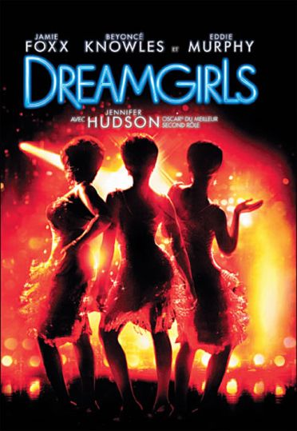
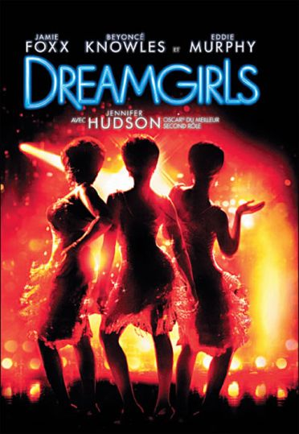

GENRE: Drama/Historical Drama
RUNTIME: 1h 54m RATING:Haunted by memories of her late mother and abused by her father (Paul Bettany), 14-year-old Lily Owens (Dakota Fanning) runs away with her friend and caregiver Rosaleen (Jennifer Hudson) to the South Carolina town that holds the key to her mother's past. There, Lily meets the Boatwright sisters (Queen Latifah, Alicia Keys, Sophie Okonedo), who take her in and teach her about beekeeping, honey, and the Black Madonna. Lily also discovers that the truth about her mother is closer than she thinks.

GENRE: Comedy/Family
RUNTIME: 1h 45m RATING:The best and the worst of the Slocumb family are on display when Woodrow Bud Slocumb keels over from a stroke. As the town swelters in the summer heat, family tensions reach a comedic boil as the Slocumb clan comes together to remember their dearly departed.

GENRE: Musical/Romance
RUNTIME: 2h 10m RATINGDeena (Beyoncé Knowles),Effie (Jennifer Hudson) and Lorrell (Anika Noni Rose) form a music trio called the Dreamettes. When ambitious manager Curtis Taylor Jr. (Jamie Foxx) spots the act at a talent show, he offers the chance of a lifetime, to be backup singers for a national star (Eddie Murphy). Taylor takes creative control of the group and eventually pushes the singers into the spotlight. However, one becomes the star, forcing another out, which teaches them about the high cost of fame.